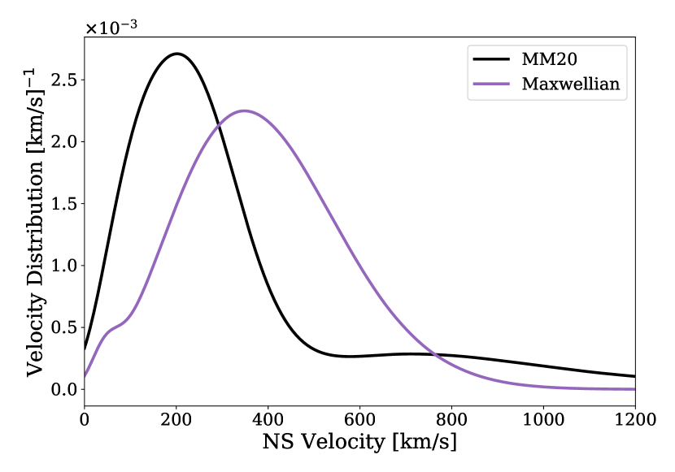
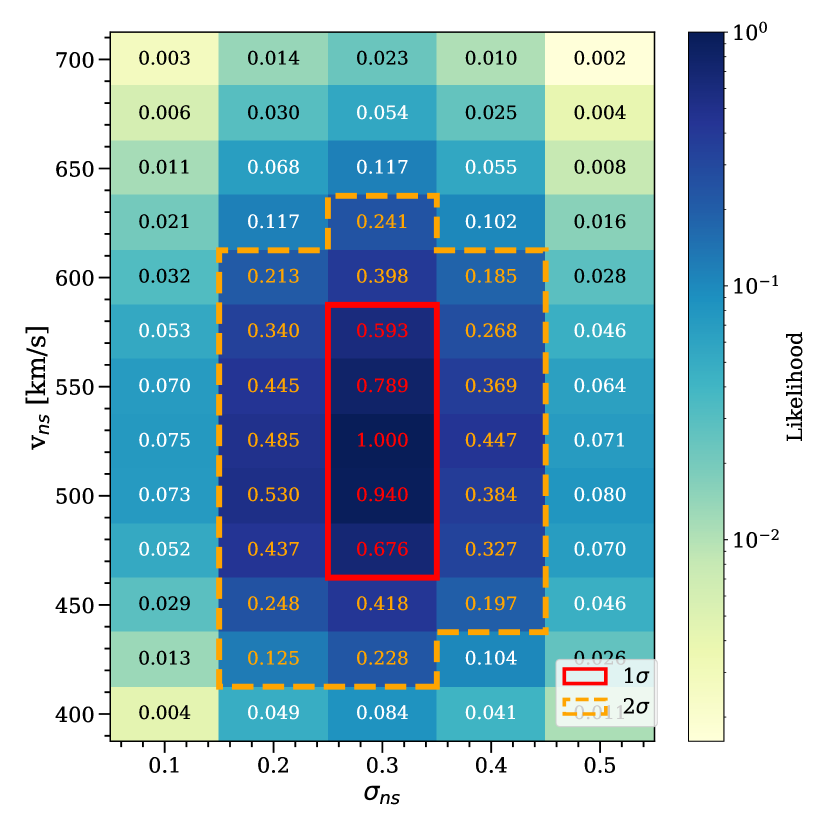

Calibration of neutron star natal kick velocities to isolated pulsar observations
Veome Kapil, Ilya Mandel, Emanuele Berti, Bernhard Müller
Veome Kapil, Ilya Mandel, Emanuele Berti, Bernhard Müller
Current prescriptions for supernova natal kicks in rapid binary population synthesis simulations are based on fits of simple functions to single pulsar velocity data. We explore a new parameterization of natal kicks received by neutron stars in isolated and binary systems developed by Mandel & Müller, which is based on 1D models and 3D supernova simulations, and accounts for the physical correlations between progenitor properties, remnant mass, and the kick velocity. We constrain two free parameters in this model using very long baseline interferometry velocity measurements of Galactic single pulsars. We find that the inferred values of natal kick parameters do not differ significantly between single and binary evolution scenarios. The best-fit values of these parameters are vns = 520 km/s for the scaling pre-factor for neutron star kicks, and σns = 0.3 for the fractional stochastic scatter in the kick velocities.
Supernovae can impart a “kick” to neutron stars, influencing their trajectories and fate in binary systems.
The Mandel & Müller (2020) (MM20) model represents a significant advancement in our understanding of supernova kicks and their impact on neutron star dynamics. Unlike other analytic models such as the Maxwellian model, which relies on a simplistic assumption of kick velocity distributions, the MM20 model incorporates recent simulation data and a more nuanced approach to account for asymmetries in supernova explosions. This enhancement allows for a more accurate depiction of how neutron stars acquire kicks during supernova events, leading to improved predictions of their behavior in binary systems.
The MM20 model contains 2 free parameters: vns and σns. To validate and constrain the MM20 model, we turned to a state-of-the-art dataset of observed single pulsar velocities. By comparing the model's predictions with real-world pulsar data using Bayesian inference, we can identify the most likely configurations of the kick model.
We simulated a population of stars in COMPAS, an open source population synthesis software, where we evolved the stars until they experience a supernova explosion, get kicked in accordance with the MM20 model at a given configuration, and formed single pulsars. After repeating this process for a range of parameter configurations, we can compute the relative likelihoods over the parameter space.
Fun fact: We simulated populations of stars in isolation as well as in binaries, and found that the evolutionary histories of the progenitor stars had a surprisingly minimal impact on the final isolated neutron star velocity distributions! This finding suggests that the dynamics of the supernova kicks are more influential than the specific evolutionary pathways taken by stars for determining the final velocities.
In order to verify that the models were sensible, we must compare the predicted neutron star velocity distributions against the observed data. For this, we used the followinf statistical tools:
The KS tests showed that the predicted velocity distributions are compatible with observations!
To further investigate the implications of the new model, we conducted simulations of binary neutron star (BNS) populations. The results indicated a notable difference between the BNS event rates predicted by the MM20 model and those from the Maxwellian model. Specifically, the MM20 model predicts a more accurate representation of the expected detection rates, demonstrating its efficacy in predicting the behavior of neutron stars formed in binary systems. This highlights the importance of incorporating realistic kick models in astrophysical simulations, ultimately improving our understanding of neutron star populations and their role in the universe.
| Natal Kick Model | BNS Detection Rate (yr-1) |
|---|---|
| MM20 | 0.09 ± 0.01 |
| Maxwellian | 0.14 ± 0.02 |